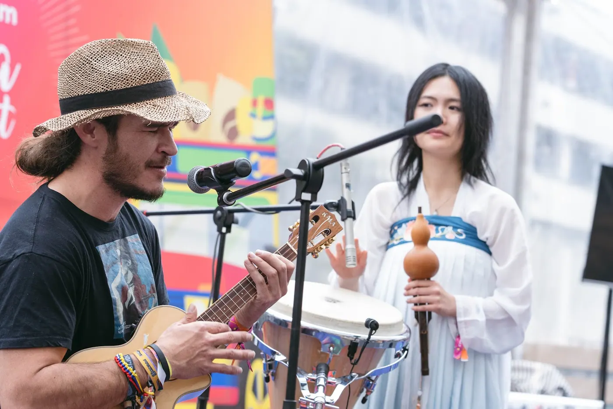
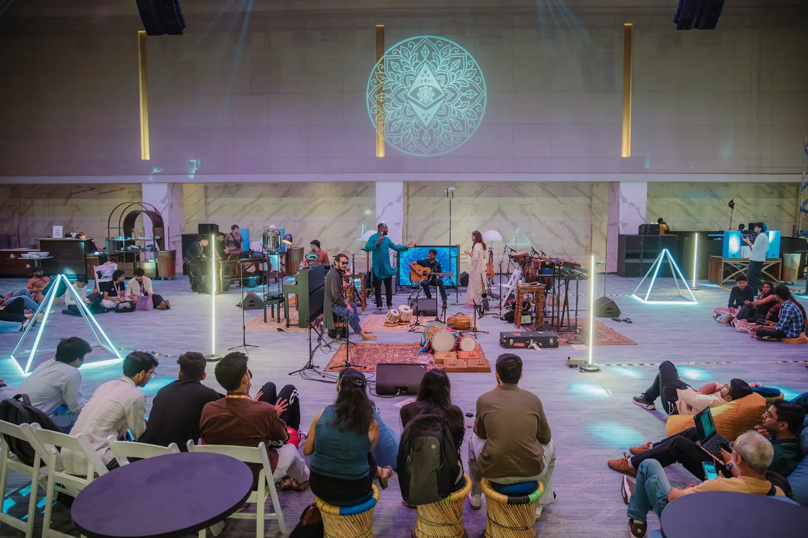
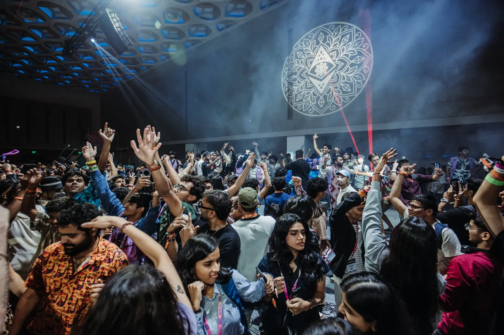

MOVEMENT 01 / 12 · G · FIRST CIRCLE · COMMUNITY PROPOSAL · NOT ONCHAIN
The First Circle G · OPEN SOURCE ORCHESTRA DAO MEET
Before the ripple, one bright and honest heartbeat.
The orchestra is whoever shows up: no auditions, no gatekeepers, no wrong instrument. Music, code, listening, translation and care belong in the same circle. This is a consent-based community proposal—not an onchain DAO or automatic membership. Enter the orchestra ↗ Visit the Garden Circle ↗ Read the community ledger ↗ The Mandala Room photo album ↗
MOVEMENT 02 / 12 · Em · ACTUAL ROOMS · LISBON MUSIC SPACE PROPOSED
2022 → 2027 · the living road Em · ORIGIN · REPERTOIRE · LIVING RÉSUMÉ
Make a room. Pass the instruments. Leave the door open.

Bogotá · 2022 · public Garden Circle history 2022 Bogotá · open-mic proposal and ETHLatam Chiva Chillout. 2023 Istanbul · ukulele donation · 2024 Bangkok · Music Stage and floor circles. 2025 Buenos Aires · 2026 Shenzhen and Mumbai · the circle keeps travelling. 2027 Lisbon · Devcon 9 is scheduled; our music space is a hope, not a booking. Walk the public timeline ↗ Devcon 9 · Lisbon ↗ 2022 open-mic DIP ↗ Public watch page ↗ Mumbai schedule archive ↗ Road to Lisbon · join ↗
MOVEMENT 03 / 12 · C · ACTUAL · DEVCON 8 MUSIC SANCTUARY
Mumbai · four days, one circle C · DEVCON 8 · MUMBAI · 3—6 NOVEMBER 2026
The Devcon 8 Music Sanctuary at the Jio World Centre.

A full circle · Devcon 8 Music Sanctuary · Mumbai · official Devcon photo About 35 artists across four days; anyone could join the playing. On 6 November the room held Devcon 8's closing ceremony. The Mandala Room preserves 35 official photos—an album, not audio or a membership roll. The Mandala Room · 35 photos ↗ The Room You Let Us Build ↗ Public schedule archive ↗ Mumbai Music Space DIP ↗ In the future music and culture is free ↗
MOVEMENT 04 / 12 · D · PLAYABLE PUBLIC CANON · NO AUTOPLAY
The repertoire you can play D · SONGS · CHORDS · STORIES · RIDER
Songs, chords, stories and an open rider—not a mythical back catalogue.
Butterflies and Love · G–Em–C–D. A Planet We Share As One · C–G–D–D. The ʻohana Songbook, open recordings and CC0 rider carry the living score. No Mumbai jam recording is published here; photographs hold that memory. Open the songs & chords ↗ The ʻohana Songbook ↗ The CC0 rider ↗ Existing consented open recording ↗ Public calls archive ↗ 3D Virtual Sanctuary ↗
MOVEMENT 05 / 12 · C · 9 PUBLIC BUILDS · 2 VERIFIED WINS · PREVIEWS ≠ ACTIVATION
Open code · public proof C · OPEN CODE · PUBLIC PROOF · ARTIST TOOLS
Nine public hackathon builds, two named wins, and tools artists can fork.
2023 broadcastr · Mantle developer infrastructure/tooling win. 2025 Opensource Orchestra · most creative use of ENS, first place. 2026 Fork the First Artist · own-key activation, public-fact AI previews and direct tips. Tip ethos · 96.31% artist · 3.69% steward compute · 0% Open Source Orchestra. Read the full public résumé ↗ Fork the First Artist · GPL ↗ Open the artist garden ↗ 2023 broadcastr ↗ 2024 Ethereum Dispatch ↗ 2025 Opensource Orchestra · ENS win ↗ 2025 TokeOfApp ↗ 2026 Vince ↗ 2026 LancerAI ↗ 2026 My Agent Ohana ↗ 2026 The ʻOhana Bot ↗ 2026 Fork the First Artist showcase ↗ Open Source Orchestra on GitHub ↗
MOVEMENT 06 / 12 · G · PROPOSED ETHIC · CONSENT BEFORE MEMBERSHIP
A first circle, not a hierarchy G · FIRST CIRCLE · EVERY CONTRIBUTION EQUAL
Locked-solid principles. An open door. One consenting human, one voice.
Code and music, artists, builders, stewards, translators and sound crew: every contribution is equal. IN, LATER and NO are equally respected; an invite, photo or RSVP is not enrolment. No token sale, donation-weighted influence, agent votes, keys, Shamans or execution. Whole-circle funding is shared equally by default; restricted grants follow their terms. Read the principles & ledger ↗ Meet the OG Circle ↗ Open community join page ↗ Raw public ledger ↗
MOVEMENT 07 / 12 · G · CONSENT ALWAYS · DOWN FIRST · AI LABELLED
Consent is the first note G · CONSENT · PRIVACY · CARE
Attendance is not recording consent. Recording is not publication consent.
Names, faces, wallets, quotes and transcripts each require their own appropriate yes. Private contacts, attendee lists and current meeting links never enter this public hall. Silence is not consent; a takedown request comes first, questions second. Agents are labelled as machines; no pictured person is presented as a DAO endorser. How a takedown works ↗ Existing consent-based recording ↗ Existing public calls ↗
MOVEMENT 09 / 12 · C · PROPOSED ONLY · NO SAFE OR CONTRACT DEPLOYED
Move at the speed of trust C · PROPOSED DAO PHASES · A PATH, NOT A DECISION
The tools come after the listening—not before it.
First Circle — reconcile IN / LATER / NO and publish a consent-based charter for review. Practice — community Git ledger, privately verified humans and equal offchain signalling. Execute only if chosen — human-only Safe with public receipts; agents never hold keys. Binding tools only after rehearsal — Snapshot X, Aragon or another explicit circle choice. Read the present state ↗ Inspect the public ledger ↗
MOVEMENT 10 / 12 · D · OPEN INVITE · DETAILS TBA · EVERYONE WELCOME
The third meetup is open to all D · THIRD OPEN SOURCE ORCHESTRA DAO MEETUP
Bring a song, a question, a skill, or simply your attention. Details to be announced.

A past open room · Mumbai · 2026 · not the future meetup or a membership roll OPEN INVITE FOR EVERYONE · musicians, builders, listeners, translators and curious guests. This First Circle prepares the door; attending the open meetup does not enrol anyone in the DAO. No date, time, place or public meeting link has been confirmed here yet. When blessed, the invitation will live here—open, accessible and without a wallet requirement. Watch the official website ↗ Open community join page ↗
MOVEMENT 11 / 12 · C · LOCKED · NOTHING TO DOWNLOAD YET
The Listening Archive C · FUTURE LISTENING ARCHIVE · SEALED WITH CARE
TRANSCRIPT + RECORDING · LOCKED UNTIL BLESSING + ALL REQUIRED CONSENT
No meetup transcript, audio, video, attributable minutes or quotation is published now. Release needs Shaka's specific blessing and every necessary participant consent. Existing public calls stay separate; they do not unlock this meeting's archive. After those gates, consented downloads will live here with credits and takedown. Enter the sealed archive ↗ Read the takedown commitment ↗ Existing public calls archive ↗ Existing consented open recording ↗
MOVEMENT 12 / 12 · G · TODO ES POSIBLE · WITH LOVE
Code is law. The law is LOVE. G · CODA · THE NEXT NOTE BELONGS TO ALL OF US
For the music and the code. For every sister, brother, sibling and curious heart.
Every voice is a node. Every contribution has dignity. Every gift stays open to inspection. The First Circle holds the heartbeat; the third meetup opens the door to everyone. TODO ES POSIBLE · come as you are · listen deeply · build openly · love loudly. Return to the orchestra ↗ Fork the open code ↗ Read the community ledger ↗ Join the road ahead ↗ The ʻohana Songbook ↗ This hall's open-source repository ↗ Takedown first ↗